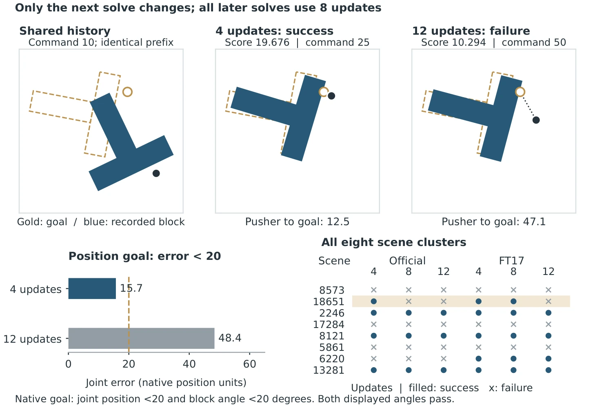
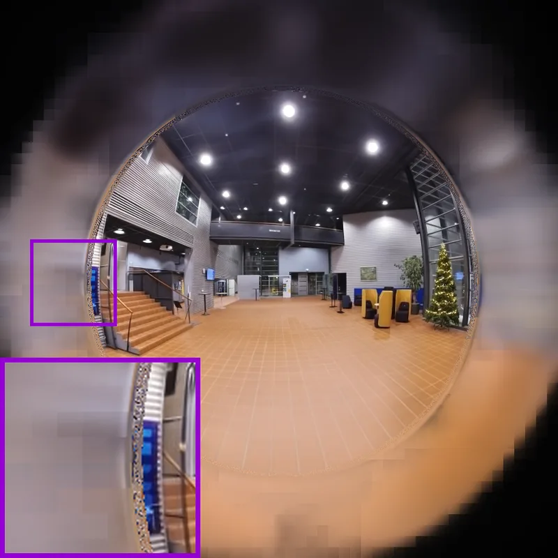
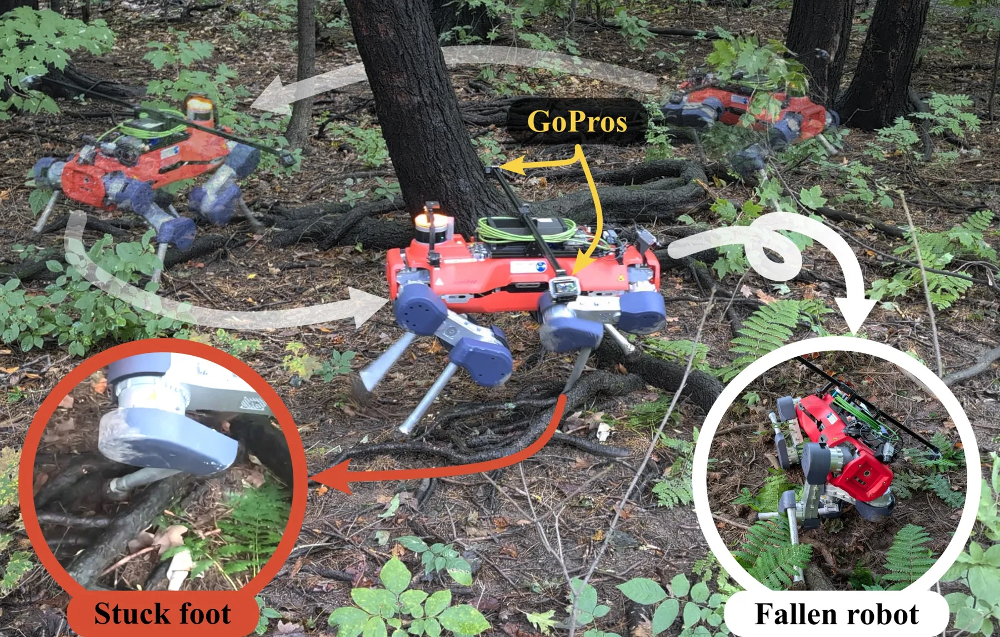
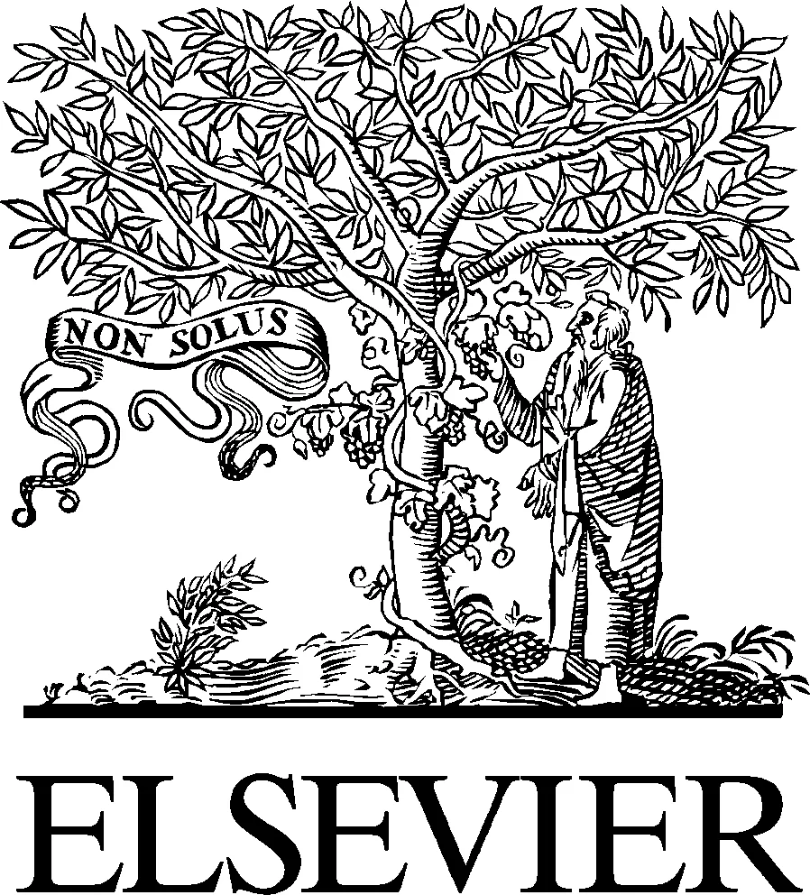

新论文 · 日期 2026-10-30 · score 17 · A层 · Robotic Foundation Models / VLA · cs.RO, cs.AI, cs.CV, cs.LG
内容级别：半海报
作者：Ruben Hammele, Samira Huber, Mohammad Nazeri, Amirreza Payandeh, Alexandyr T. Card, Aaron Nguyen, Anuj Pokhrel, Daeun Song, Xuesu Xiao, S\"oren Pirk
评分 14/10
VLA 推理配置配对评测BEHAVIOR-1K动作块执行数据采集成本置信区间
一句话工作总结：9 个推理旋钮里只有 1 个显著：每次预测执行 13 条而非 26 条动作，Q-score 掉 0.16±0.03、成功率掉 11 个点、episode 多 752 步；去噪 20→1 步、关掉 overlap inpainting、2 倍速、best-of-4、224 直接渲染都在置信区间内看不出差别。数据采集侧快照重启省 29–43% 仿真步，但成功率没变。
视觉-语言-动作（VLA）模型被视为通用家用机器人的可行路线，但在小规模设定里调好的推理与数据采集策略，未必能迁移到任务更多样的大规模评测。本文在一个微调过的 π0.5 模型上（基于 2025 BEHAVIOR Challenge 冠军方案，公开测试集 Q-score 0.39），对先前提出的推理与数据采集策略做系统性配对评测，覆盖全部 100 个任务。结论是这些策略并不一致地迁移：每次预测执行的动作数减半会让 Q…
Vision-Language-Action (VLA) models offer a promising paradigm for general-purpose household robotics. However, inference and data-collection strategies that have been deployed in smaller-scale settings do not…

新论文 · 日期 2026-10-30 · score 11 · A层 · Robotic Foundation Models / VLA · cs.RO, cs.AI, cs.LG
内容级别：半海报
作者：Josef Chen
评分 11/10
世界模型规划负结果计算预算分配配对干预代理指标失配PushT
一句话工作总结：一个 1,505 参数的学出来的更新头在 16 个预留场景上只解出 8 个，而对照的 LePlanner 解 16/16 且只用 5.652 s；更反直觉的是「多算反而更差」——同一决策点 4/8/12 次更新对应 9/8/7 次成功，且所有翻转只在 8 个簇中的 1 个里。作者的结论是：这份工作没有达到自己预设的判据。
在 PushT 上，一个只有 1,505 个参数的固定动作更新器，在预留的 16 个场景中解出 8 个；对照规划器分别是：选定的 Adam 解 7 个（规划加编码共 218.440 s）、改造版 iCEM 解 2 个（49.309 s）、已发布的 LePlanner 解 16 个（5.652 s），而本文更新器耗时 59.079 s——它没有满足作者事先设定的任务-成本判据。作者另做一组配对实验：在同一历史后只回放…
On PushT, our fixed action updater (1,505 parameters) solves 8 of 16 scenes reserved from our configuration selection. The comparison planners perform as follows: Selected Adam (7 tasks solved, total planning…

新论文 · 日期 2026-10-30 · score 6 · A层 · Robust State Estimation / Uncertainty · eess.SP, cs.RO, physics.geo-ph
内容级别：半海报
作者：Joseph O'Leary, Tapio Simula, Tom Kimpson, Corey Davey, Wenchao Li, Andrew D. Greentree, Allison Kealy
评分 16/10
链式因子图前向-后向平滑后验熵模糊度诊断地图匹配GNSS 拒止导航
一句话工作总结：同一个网格、同一套剪枝、同一批测量，只把前向滤波换成前向-后向平滑，中位误差就从 57.7 m 降到 32.8 m（−43%）；再加一个几乎免费的诊断量——后验 Shannon 熵，AUC 0.73/0.78 抓「大误差段」，10% 虚警下检出 26%/47%。代价是全部结果来自合成 INS + 磁测，真实地图与噪声相关性未覆盖。
航空磁异常导航（MagNav）用磁力计测量匹配岩石圈磁异常图，作为不依赖 GNSS 的被动定位手段。已有匹配算法各有妥协：扩展卡尔曼滤波假设后验高斯单峰，粒子滤波需要大量采样，Viterbi 则丢掉后验不确定性只留一条最优路径。本文把匹配建模为链式因子图上的推断，按段用前向-后向算法求解，得到候选位置上的离散后验及其 Shannon 熵。在 Renfrew_395 地图上，10³ 次合成试验的中位定位误差 32.7…
Airborne magnetic anomaly navigation provides a passive, unjammable alternative to Global Navigation Satellite Systems positioning by matching magnetometer measurements against a lithospheric magnetic anomaly…

新论文 · 日期 2026-10-30 · score 15 · B层 · Neural Rendering / 3DGS / NeRF · cs.CV, cs.GR, cs.RO
内容级别：简报式摘要
作者：Allen Tu, Meher Gitika Karumuri, Shifan Zhu, Hailing Wang, Yen-Liang Lin, David Held, Matthias Zwicker, Tom Goldstein
评分 13/10
鱼眼 3DGS全视场光栅化网格提取标定感知稠密化实时渲染
一句话工作总结：第一个能「鱼眼直接训练 + 视场超过 180° + 同场景出网格」的 3DGS 表面重建：FIORD PSNR +2.28 dB、FullCircle +1.97 dB、ScanNet++ +0.46 dB，FIORD 网格 F 0.245±0.001（PGSR 0.239±0.002），79 FPS vs 3DGUT+PPISP 的 84 FPS；代价是仍需逐场景优化，不是…
机器人、自动驾驶与 360 相机用鱼眼镜头换取大视场，但已有鱼眼高斯泼溅只能光栅化到 180° 且不产出网格，而高斯表面重建方法又假设针孔图像。GOFish 声称是首个直接在鱼眼图像上训练、能把视场光栅化到 180° 以上、并从同一场景提取对齐网格的 3DGS 表面重建方法：标定定义的稠密化在整幅视场恢复表面，标定 Mip 滤波与广角外观建模把像素模糊与镜头衰减挡在场景与网格之外。在 200° 的 FIORD 与…
Robots, autonomous vehicles, and consumer 360{\deg} cameras use fisheye lenses for wide fields of view (FoVs). Simulation-ready digital twins require photorealistic rendering across the full FoV and an aligned…

新论文 · 日期 2026-10-30 · score 5 · B-层 · Robust State Estimation / Uncertainty · cs.RO, cs.CV
内容级别：简报式摘要
作者：Jean-Michel Fortin, William Larriv\'ee-Hardy, Gabriel Jeanson, Olivier Gamache, Daniele De Martini, Fran\c{c}ois Pomerleau, Philippe Gigu\`ere
评分 11/10
因子图残差自监督标签足式状态估计落脚点规划地形感知
一句话工作总结：把「这一步踩得稳不稳」定义成足式状态估计因子图里的接触残差，而不是人工规则；1,716 个标注接触上涨 28% 排序、室外试验排序相关性 +58%，50 m 森林实机验证泥地/植被这类非几何属性也能学到。对我们的意义是「用估计器残差给感知打标签」这条链路，但它的贡献在监督设计，不在状态估计本身。
人类靠视觉预判地面会不会塌陷再决定落脚，自监督学习本可以让足式机器人也具备这种能力，但监督信号通常凭直觉选，其影响很少被检验。TACOS 提出一个基于足式状态估计因子图残差的连续落脚不稳定度分数，把它投影到接触前的图像上，用来监督稠密视觉预测器；作者给出硬分数（利用后见之明）与因果软分数（可即时获得）两个变体。在 1,716 个手工标注接触上，两个变体在检测不稳定与排序严重程度上都优于所有对照，池化严重度排序提升…
Humans navigate their environment based on their vision system, anticipating how the ground will respond before committing to a step. Self-supervised learning could provide legged robots the same ability, but…

新论文 · 日期 2026-10-30 · score 5 · C层 · 纯 GNSS/INS / PPP-AR · eess.SP, cs.SY, eess.SY
内容级别：简报式摘要
作者：Zihong Zhou, Bing Xu
评分 7/10
矢量跟踪环轨道动力学先验自适应协方差GNSS 拒止LEO-PNT
一句话工作总结：把「轨道动力学先验」用自适应协方差塞进 GNSS 矢量跟踪环：标称三维位置 RMSE 2.631→1.081 m、速度 0.3985→0.1023 m/s；信号全断时位置误差仍有界在 8.27 m 而标量环直接失效。与我们的相关性在「残余先验 + 自适应权重」这一层，不在定轨本身。
CubeSat 的低轨定位导航授时（LEO-PNT）需要可靠的在轨定轨，但机载接收机受单频码基测量、信号间歇与高动态轨道条件限制。本文提出自适应轨道辅助矢量跟踪（OAVT）：以 GNSS 矢量跟踪环（VTL）为主估计器，松耦合一个低保真轨道动力学模型（ODM）提供位置/速度伪测量，并用基于 GNSS 压力与 ODM-GNSS 残差一致性的自适应协方差分配来调节 ODM 的贡献。标称条件下 OAVT 保留 VTL 相…
Reliable orbit determination for CubeSats is essential for emerging low-Earth-orbit positioning, navigation, and timing (LEO-PNT) applications. However, onboard orbit determination remains constrained by singl…